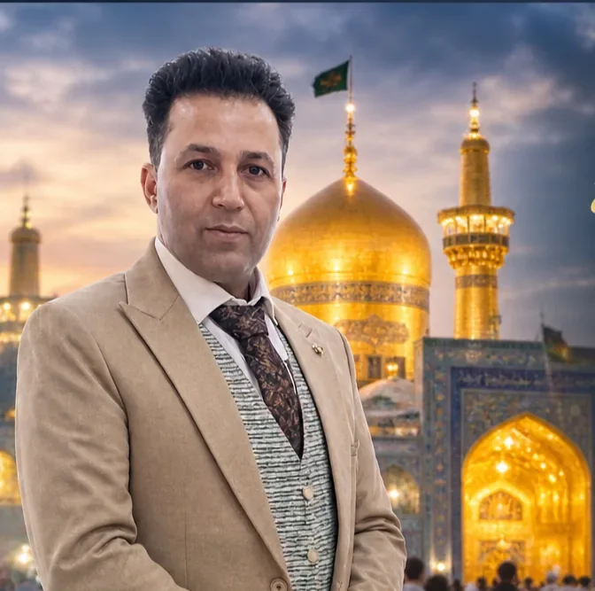

تعرف عليّ
أهلاً بك في مشهد،
أنا حسين.
الإجابة المختصرة
تشرح هذه الصفحة دور حسين رفيقاً للزائر العربي إلى مشهد، وكيف تبدأ بالتواصل معه لمناقشة موعد السفر واحتياجاتك. بعد ذلك، يمكن تنسيق التفاصيل التي تتفقان عليها؛ أما نطاق كل خدمة وتوفرها وتكلفتها فيُؤكد قبل الاتفاق، ولا تُفترض وعود مسبقة.

أريد أن تبدأ رحلتك إلى مشهد بوضوح وراحة. أنا حسين، أعيش في مشهد وأرافق الزائر العربي شخصياً: من لحظة الوصول إلى المطار، إلى الإقامة القريبة من الحرم، وزيارة الإمام الرضا، والتنقل داخل المدينة، وحتى التوديع. لستُ شركة سياحية؛ التواصل معي مباشر عبر واتساب، والتفاصيل تُؤكد قبل أي التزام.
كيف أستطيع مساعدتك؟
تنسيق الرحلة
الاستقبال من المطار، الإقامة، التنقل، وبرنامج الزيارة حسب احتياجك.
تفاصيل الخدمات ↙التنسيق الصحي
المساعدة في الاستفسار عن المستشفيات والمواعيد عند الحاجة إلى رعاية طبية.
السياحة العلاجية ↙زيارة الحرم
ما ينبغي معرفته قبل زيارة حرم الإمام الرضا وآداب الزيارة.
دليل الزيارة ↙من العراق إلى مشهد
خطوات التخطيط للقادمين من العراق: الطريق والتكلفة والوصول.
دليل العراق ↙كيف يجري التنسيق؟
تبدأ الخطوة الأولى بفهم هدف الرحلة: زيارة الحرم، أو الإقامة والتنقل، أو الاستفسار عن خدمات صحية. بعد ذلك نحدد التفاصيل العملية التي تؤثر في الاختيار، مثل التواريخ وعدد المسافرين والميزانية واحتياجات الحركة واللغة.
ثم تُراجع الخيارات المتاحة مع مقدم الخدمة المعني، ويُطلب تأكيد السعر والتوفر وما يشمله العرض وشروط الإلغاء قبل اتخاذ قرار الحجز. تختلف التفاصيل بحسب الموسم والجهة المقدمة للخدمة، لذلك لا تُعرض الأسعار القديمة على أنها أسعار حالية.
الوضوح قبل التأكيد
دوري هو المساعدة في فهم الخيارات وتنسيق التفاصيل، لا تقديم وعود بنتيجة تأشيرة أو علاج، ولا استبدال رأي الطبيب أو الجهة الرسمية. إذا لم تتوفر معلومة موثوقة أو لم يؤكدها مقدم الخدمة، يجب توضيح ذلك بدلاً من التخمين.
للبدء، يكفي عادةً ذكر التواريخ التقريبية وعدد المسافرين ونوع الخدمة المطلوبة. لا تنشر أرقام الجوازات أو التقارير الطبية أو بيانات الدفع في التعليقات العامة، ولا تشارك معلومات شخصية لا تلزم لبحث الطلب.
أسئلة شائعة
ما الخدمات التي يمكن الاستفسار عنها؟
يمكن إرسال تفاصيل الرحلة والخدمات المطلوبة للاستفسار عن الخيارات المتاحة، مع تأكيد النطاق والتكلفة قبل الحجز.
هل يمكن تنسيق الإقامة والتنقل؟
اذكر التواريخ وعدد المسافرين واحتياجاتهم، ثم اطلب تأكيداً مكتوباً للتوفر والسعر.
هل يقدم الموقع معلومات عن السياحة العلاجية؟
تتوفر معلومات إرشادية، لكن التقييم والعلاج يجب أن يكونا لدى جهة طبية مؤهلة.
كيف أطلب خدمة؟
أرسل مدينة الانطلاق والتواريخ وعدد المسافرين ونوع الخدمة المطلوبة، دون مشاركة بيانات حساسة غير لازمة.
هل الأسعار ثابتة؟
لا؛ تعتمد على التواريخ ومقدم الخدمة والتوفر. اطلب عرضاً حديثاً وشروط الإلغاء قبل الدفع.